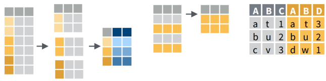
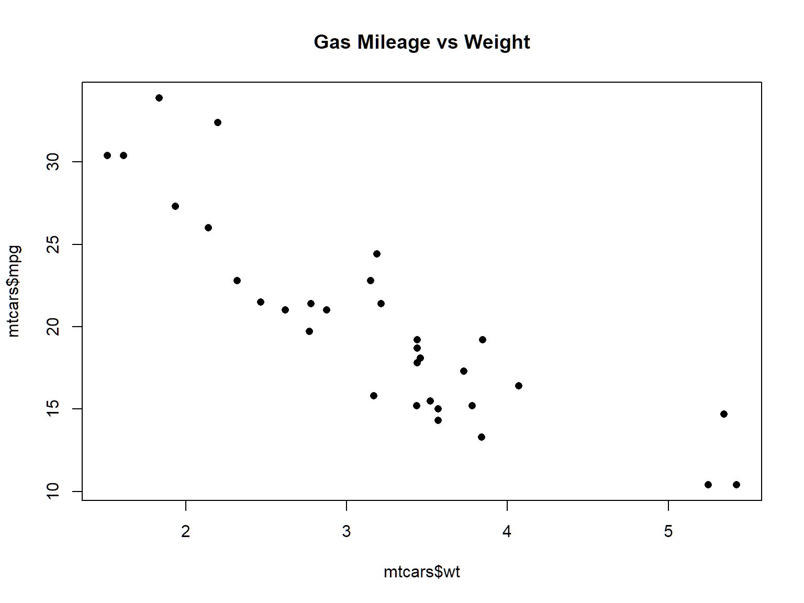

A better way: dplyr

An alternative way to manipulate or ‘munge’ data frames.
Part of the tidyverse.
Best way to learn: examples + cheat sheet.
Working with 2D Data

R has two data classes that organize data in rows and columns:
A tibble is a data frame that prints nicer and has slightly different default behavior when selecting columns.
A row, by any other name…
rows
aka:
- record
- case
- feature (spatial)
columns
aka: variable, field
## Sepal.Length Sepal.Width Petal.Length Petal.Width Species
## 1 5.1 3.5 1.4 0.2 setosa
## 2 4.9 3.0 1.4 0.2 setosa
## 3 4.7 3.2 1.3 0.2 setosa
## 4 4.6 3.1 1.5 0.2 setosa
## 5 5.0 3.6 1.4 0.2 setosa
## 6 5.4 3.9 1.7 0.4 setosa| Matrix | Data Frame / Tibble | |
|---|---|---|
| Data type | entire matrix must use the same data type | each column can be a different data type |
| Column names | optional, can be defined as an attribute for display | built-in, columns can referenced by name |
| More than two dimensions | yes (array) | no |
| Can add rows and columns | yes | yes |
| Matrix algebra | yes | no |
Create a matrix from scratch use the matrix() function.
## Create a 3x3 matrix
mat <- matrix(data=rnorm(9), nrow = 3, ncol=3)
mat
## Compute the Eigenvalues
eigen(mat)## [,1] [,2] [,3]
## [1,] -0.5196683 0.02840571 -1.324555
## [2,] -0.2766158 0.82941990 -1.292163
## [3,] -1.8808167 -0.82378473 -1.411871## eigen() decomposition
## $values
## [1] -2.8155185 1.4276911 0.2857081
##
## $vectors
## [,1] [,2] [,3]
## [1,] 0.4693133 -0.3206792 0.6496819
## [2,] 0.3264774 -0.8314952 -0.6409495
## [3,] 0.8204618 0.4536305 -0.4087751There are number of sample datasets that come with R.
Some sample data frames that come with R:
iris
trees
quakes
airquality
mtcars
faithful
You can generally start using a bundled dataset by just typing its name in an expression. R will load it on-the-fly.
To explicitly load a dataset into memory, execute data()
Functions to explore data frames include:
head(), tail()
names()
nrow()
ncol()
dim()
help()
summary()
Explore the iris built-in dataset.
## View the column names
names(iris)
## View the first few rows
head(iris)
## Read about the data
help(iris)
## Get the number of rows
nrow(iris)
## Get the number of columns
ncol(iris)
## Basic stats for each column
summary(iris)
## View the data in a tab
View(iris)
## Make a scatterplot
plot(iris$Sepal.Length, iris$Petal.Length)Two approaches: Base R & packages from the tidyverse. The following are equivalent.
Base R
setosa_recs <- iris[iris$Species=="setosa", "Sepal.Length", drop=FALSE]
setosa_sepal_ord <- order(setosa_recs$Sepal.Length)
running_sum <- cumsum(setosa_recs[set_sepal_ord, "Sepal.Length"])
setosa_runsum <- cbind(setosa_recs, runsum=running_sum)tidyverse
You can grab an individual column by name with the $ selector.
## Min. 1st Qu. Median Mean 3rd Qu. Max.
## 1.513 2.581 3.325 3.217 3.610 5.424
One of the most common things you do with data frames is selecting specific rows and/or columns.
In base R, this is commonly done with square bracket notation:
my_dataframe[rows, columns]
Where rows is a vector of integers of the row numbers you want, or a vector of logical values (TRUE / FALSE) for the rows. columns can be a vector of integers, logicals, or column names.
## Get the first three rows and all columns
iris[1:3, ]
## Get the odd rows from 1 to 20 and just the Sepal measurements
i <- seq(from=1, to=20, by=2)
i
iris[i, c("Sepal.Width", "Sepal.Length")]
## Get just the rows for Setosa
iris[ iris$Species=="setosa" , ]
## Compute the average petal length for setosa
mean(iris[ iris$Species=="setosa" , "Petal.Length"])| append rows | rbind() |
| combine data frames | cbind() |
| add new columns | transform() |
| join data frames based on common field | merge() |
| sort rows | x[order(x),] |

An alternative way to manipulate or ‘munge’ data frames.
Part of the tidyverse.
Best way to learn: examples + cheat sheet.
The key to making this easier is the use of piping syntax.
fun_a() %>% fun_b() %>% fun_c() %>% …
Piping allows the results of one function to be passed to the next, so a string of commands can be combined like a sentence.
| select column(s) | select() |
| select rows | filter() |
| order rows | arrange() |
| add new columns | mutate() |
| join data frames | left_join(), right_join(), inner_join() |
iris %>% filter(Sepal.Length > 7) %>% mutate(width_length = Sepal.Width * Sepal.Length)
│ │ │
│ │ └─ create a new column
│ │
│ ├─ select those rows where Sepal.Length > 7
│ └─ don't have to specify the data frame
│
└ start with this data frame
Result:
## Sepal.Length Sepal.Width Petal.Length Petal.Width Species
## 1 7.1 3.0 5.9 2.1 virginica
## 2 7.6 3.0 6.6 2.1 virginica
## 3 7.3 2.9 6.3 1.8 virginica
## 4 7.2 3.6 6.1 2.5 virginica
## 5 7.7 3.8 6.7 2.2 virginica
## 6 7.7 2.6 6.9 2.3 virginica
## 7 7.7 2.8 6.7 2.0 virginica
## 8 7.2 3.2 6.0 1.8 virginica
## 9 7.2 3.0 5.8 1.6 virginica
## 10 7.4 2.8 6.1 1.9 virginica
## 11 7.9 3.8 6.4 2.0 virginica
## 12 7.7 3.0 6.1 2.3 virginica
## widthxlength
## 1 21.30
## 2 22.80
## 3 21.17
## 4 25.92
## 5 29.26
## 6 20.02
## 7 21.56
## 8 23.04
## 9 21.60
## 10 20.72
## 11 30.02
## 12 23.10library(dplyr)
# Select rows where Sepal.Length > 7
iris %>% filter(Sepal.Length > 7)
# Select rows where Sepal.Length > 7 AND Species is virginica
iris %>% filter(Sepal.Length > 7, Species=="virginica")
# Select rows where Sepal.Length > 7 AND Species is virginica, and just the columns
# for Species, Sepal.Lenth, and Sepal.Width
iris %>% filter(Sepal.Length > 7, Species=="virginica") %>%
select(Species, Sepal.Length, Sepal.Width)
# Finally, sort rows by Sepal.Length followed by Sepal.Width
iris %>% filter(Sepal.Length > 7, Species=="virginica") %>%
select(Species, Sepal.Length, Sepal.Width) %>%
arrange(Sepal.Length, Sepal.Width)## Sepal.Length Sepal.Width Petal.Length Petal.Width Species
## 1 7.1 3.0 5.9 2.1 virginica
## 2 7.6 3.0 6.6 2.1 virginica
## 3 7.3 2.9 6.3 1.8 virginica
## 4 7.2 3.6 6.1 2.5 virginica
## 5 7.7 3.8 6.7 2.2 virginica
## 6 7.7 2.6 6.9 2.3 virginica
## 7 7.7 2.8 6.7 2.0 virginica
## 8 7.2 3.2 6.0 1.8 virginica
## 9 7.2 3.0 5.8 1.6 virginica
## 10 7.4 2.8 6.1 1.9 virginica
## 11 7.9 3.8 6.4 2.0 virginica
## 12 7.7 3.0 6.1 2.3 virginica# Select rows where Sepal.Length > 7 AND Species is virginica
iris %>% filter(Sepal.Length > 7, Species=="virginica")## Sepal.Length Sepal.Width Petal.Length Petal.Width Species
## 1 7.1 3.0 5.9 2.1 virginica
## 2 7.6 3.0 6.6 2.1 virginica
## 3 7.3 2.9 6.3 1.8 virginica
## 4 7.2 3.6 6.1 2.5 virginica
## 5 7.7 3.8 6.7 2.2 virginica
## 6 7.7 2.6 6.9 2.3 virginica
## 7 7.7 2.8 6.7 2.0 virginica
## 8 7.2 3.2 6.0 1.8 virginica
## 9 7.2 3.0 5.8 1.6 virginica
## 10 7.4 2.8 6.1 1.9 virginica
## 11 7.9 3.8 6.4 2.0 virginica
## 12 7.7 3.0 6.1 2.3 virginica# Select rows where Sepal.Length > 7 AND Species is virginica, and just two columns
iris %>% filter(Sepal.Length > 7, Species=="virginica") %>%
select(Species, Sepal.Length, Sepal.Width)## Species Sepal.Length Sepal.Width
## 1 virginica 7.1 3.0
## 2 virginica 7.6 3.0
## 3 virginica 7.3 2.9
## 4 virginica 7.2 3.6
## 5 virginica 7.7 3.8
## 6 virginica 7.7 2.6
## 7 virginica 7.7 2.8
## 8 virginica 7.2 3.2
## 9 virginica 7.2 3.0
## 10 virginica 7.4 2.8
## 11 virginica 7.9 3.8
## 12 virginica 7.7 3.0# Finally, sort by Sepal.Length followed by Sepal.Width
iris %>% filter(Sepal.Length > 7, Species=="virginica") %>%
select(Species, Sepal.Length, Sepal.Width) %>%
arrange(Sepal.Length, Sepal.Width)## Species Sepal.Length Sepal.Width
## 1 virginica 7.1 3.0
## 2 virginica 7.2 3.0
## 3 virginica 7.2 3.2
## 4 virginica 7.2 3.6
## 5 virginica 7.3 2.9
## 6 virginica 7.4 2.8
## 7 virginica 7.6 3.0
## 8 virginica 7.7 2.6
## 9 virginica 7.7 2.8
## 10 virginica 7.7 3.0
## 11 virginica 7.7 3.8
## 12 virginica 7.9 3.8When passed regular data frames, dplyr functions return tibble objects, which are essentially data frames with a couple of minor tweaks.
RStudio keyboard shortcut to insert %>%: ctrl + shift + m
For more examples, see the dplyr Cheat Sheet
[Solution]
## Species Petal.Width
## 1 versicolor 1.0
## 2 versicolor 1.0
## 3 versicolor 1.0
## 4 versicolor 1.0
## 5 versicolor 1.0
## 6 versicolor 1.0
## 7 versicolor 1.0
## 8 versicolor 1.1
## 9 versicolor 1.1
## 10 versicolor 1.1
## 11 versicolor 1.2
## 12 versicolor 1.2
## 13 versicolor 1.2
## 14 versicolor 1.2
## 15 versicolor 1.2
## 16 versicolor 1.3
## 17 versicolor 1.3
## 18 versicolor 1.3
## 19 versicolor 1.3
## 20 versicolor 1.3
## 21 versicolor 1.3
## 22 versicolor 1.3
## 23 versicolor 1.3
## 24 versicolor 1.3
## 25 versicolor 1.3
## 26 versicolor 1.3
## 27 versicolor 1.3
## 28 versicolor 1.3
## 29 versicolor 1.4
## 30 versicolor 1.4
## 31 versicolor 1.4
## 32 versicolor 1.4
## 33 versicolor 1.4
## 34 versicolor 1.4
## 35 versicolor 1.4
## 36 versicolor 1.5
## 37 versicolor 1.5
## 38 versicolor 1.5
## 39 versicolor 1.5
## 40 versicolor 1.5
## 41 versicolor 1.5
## 42 versicolor 1.5
## 43 versicolor 1.5
## 44 versicolor 1.5
## 45 versicolor 1.5
## 46 versicolor 1.6
## 47 versicolor 1.6
## 48 versicolor 1.6
## 49 versicolor 1.7
## 50 versicolor 1.8[Solution]
iris %>% filter(Species == "versicolor") %>%
select(Species, Petal.Width) %>%
arrange(Petal.Width) %>% top_n(5)## Selecting by Petal.Width## Species Petal.Width
## 1 versicolor 1.6
## 2 versicolor 1.6
## 3 versicolor 1.6
## 4 versicolor 1.7
## 5 versicolor 1.8A common task in analysis is to group rows according to the values in a column, and then for each group of rows compute a statistic like mean, max, or count.
To do this in dplyr, use group_by() followed by summarise() or count().
# For each Species, compute the mean petal length and width
iris %>% group_by(Species) %>%
summarise(avg_petal_length = mean(Petal.Length), avg_petal_width = mean(Petal.Width))## # A tibble: 3 x 3
## Species avg_petal_length avg_petal_width
## <fct> <dbl> <dbl>
## 1 setosa 1.46 0.246
## 2 versicolor 4.26 1.33
## 3 virginica 5.55 2.03For each species in iris, compute the minimum and maximum sepal length.
[Solution]
iris %>% group_by(Species) %>%
summarise(min_sep_len = min(Sepal.Length), max_sep_len = max(Sepal.Length))## # A tibble: 3 x 3
## Species min_sep_len max_sep_len
## <fct> <dbl> <dbl>
## 1 setosa 4.3 5.8
## 2 versicolor 4.9 7
## 3 virginica 4.9 7.9An easy way to import a csv file is the ‘Import Dataset’ button in RStudio. This tool generates all the arguments for the read.csv() function.
Let’s import the Yosemite Missing People csv file.
csv_fn <- "./data/yosemite_missing_people.csv"
file.exists(csv_fn)
missing_df <- read.csv(csv_fn, stringsAsFactors=FALSE)
names(missing_df)
nrow(missing_df)
head(missing_df)## [1] TRUE## [1] "ï..X" "Y" "OBJECTID_1" "OBJECTID" "Georef_Unc"
## [6] "Distance" "Type" "Lat" "Long" "Extent"
## [11] "CaseNumber" "SARNumber" "IncidYear" "DateTimeLa" "DateTimeIn"
## [16] "DateTimeSu" "DateTIme_1" "ContactMet" "EcoRegionD" "EcoRegio_1"
## [21] "IncidType" "NumberofSu" "GroupDynam" "SubjectCat" "SubSex"
## [26] "SubAge" "IPPType" "IPPClassif" "IncidContr" "IncidOutco"
## [31] "Scenario" "SubjMedInj" "RescueMeth" "LostPerson" "IPP_GR_Loc"
## [36] "IPP_GR_Typ" "IPP_GR_Pat" "IPP_GR_Not" "Intended_D" "FindFeatur"
## [41] "Found_GR_L" "Found_GR_T" "Found_GR_P" "Found_GR_N" "Motorized_"
## [46] "Incident_N" "TotalTimeM" "TotalSearc" "GlobalID"## [1] 213## ï..X Y OBJECTID_1 OBJECTID Georef_Unc Distance Type
## 1 -119.6632 37.66355 1 1 336.3710 1340.2605 IPP
## 2 -119.8099 37.76910 2 2 526.3630 1293.0631 IPP
## 3 -119.5958 37.74595 3 3 56.3650 0.0000 IPP
## 4 -119.5599 37.75631 4 4 126.3640 1760.0421 IPP
## 5 -119.5937 37.74561 5 5 41.3650 357.1429 IPP
## 6 -119.6064 37.74521 6 6 846.5152 1823.4372 IPP
## Lat Long Extent CaseNumber SARNumber IncidYear
## 1 37.66355 -119.6632 310 20090248 2009004 2009
## 2 37.76910 -119.8099 500 20090652 2009014 2009
## 3 37.74595 -119.5958 30 20090940 2009024 2009
## 4 37.75631 -119.5599 100 20091134 2009029 2009
## 5 37.74561 -119.5937 15 20091252 2009036 2009
## 6 37.74521 -119.6064 15 20091345 2009042 2009
## DateTimeLa DateTimeIn
## 1 2009-02-01T00:00:00.000Z 2009-02-01T00:00:00.000Z
## 2 2009-03-30T00:00:00.000Z 2009-03-30T00:00:00.000Z
## 3 2009-04-25T00:00:00.000Z 2009-04-25T00:00:00.000Z
## 4 2009-05-12T00:00:00.000Z 2009-05-12T00:00:00.000Z
## 5 2009-05-19T00:00:00.000Z 2009-05-19T00:00:00.000Z
## 6 2009-05-23T00:00:00.000Z 2009-05-23T00:00:00.000Z
## DateTimeSu DateTIme_1 ContactMet
## 1 2009-02-01T00:00:00.000Z 2009-02-01T00:00:00.000Z Subject Cell Phone
## 2 2009-03-30T00:00:00.000Z 2009-03-30T00:00:00.000Z Reported Missing
## 3 2009-04-25T00:00:00.000Z 2009-04-25T00:00:00.000Z Reported Missing
## 4 2009-05-12T00:00:00.000Z 2009-05-12T00:00:00.000Z Subject Cell Phone
## 5 2009-05-19T00:00:00.000Z 2009-05-19T00:00:00.000Z Reported Missing
## 6 2009-05-23T00:00:00.000Z 2009-05-23T00:00:00.000Z Reported Missing
## EcoRegionD EcoRegio_1 IncidType
## 1 Temperate M260 Mediterranean Regime Mountains Search
## 2 Temperate M260 Mediterranean Regime Mountains Separated Party
## 3 Temperate M260 Mediterranean Regime Mountains Overdue
## 4 Temperate M260 Mediterranean Regime Mountains Search
## 5 Temperate M260 Mediterranean Regime Mountains Separated Party
## 6 Temperate M260 Mediterranean Regime Mountains Overdue
## NumberofSu GroupDynam SubjectCat SubSex SubAge IPPType
## 1 1 Solo Subject Mental Retardation Male 31 LKP
## 2 1 Solo Subject Hiker Male 0 PLS
## 3 1 Solo Subject Child (13-15) Male 14 LKP
## 4 1 Solo Subject Hiker Male 35 LKP
## 5 1 Solo Subject Child (4-6) Male 6 PLS
## 6 1 Solo Subject Hiker Male 29 PLS
## IPPClassif IncidContr IncidOutco Scenario
## 1 Locality Description (Added) Darkness Subject Found Alive Lost
## 2 Woods Unknown Subject Found Alive Separated
## 3 Building Unknown Subject Found Alive Overdue
## 4 Locality Description (Added) Snow/Ice Subject Found Alive Lost
## 5 Trailhead Unknown Subject Found Alive Separated
## 6 Trail Unknown Subject Found Alive Overdue
## SubjMedInj RescueMeth LostPerson IPP_GR_Loc
## 1 None Snow Machine Route Traveling Badger Pass Ski Area
## 2 None Walkout Route Traveling Tuolumne Grove
## 3 None Other Unknown Lower Falls Restroom
## 4 None Helicopter Unknown North Dome
## 5 None Other Not Lost Lower Falls Trailhead
## 6 None Other Unknown Upper Yosemite Falls Trail
## IPP_GR_Typ IPP_GR_Pat
## 1 NEAR A FEATURE Null
## 2 FEATURE (NAMED PLACE) Null
## 3 NEAR A FEATURE Null
## 4 FEATURE (NAMED PLACE) Null
## 5 FEATURE (NAMED PLACE) Null
## 6 OFFSET ALONG A PATH Trail
## IPP_GR_Not
## 1 Subject's last known point was described as "Near Badger Pass Ski Area"
## 2 PLS - in the Tuolumne Grove
## 3 Subject last seen at Upper Pines Campground but their bike was found at the Yosemite Yosemite Falls Restroom (LKP)
## 4 LKP - North Dome
## 5 Hasty search team sent to Lower Falls Trailhead (plotted trailhead nead Lower Falls Bus Stop)
## 6 PLS - 15 minutes up Yosemite Falls Trail (plotted at half a mile up trail)
## Intended_D FindFeatur Found_GR_L
## 1 Unknown Forest/woods Eagle Chair Lift
## 2 Unknown Road Tuolumne Grove Parking
## 3 Top of Yosemite Falls Structure Lower Falls Restroom
## 4 Loop - back to Yosemite Valley Forest/woods Indian Ridge
## 5 Unknown Structure Yosemite Lodge
## 6 Top of Yosemite Falls Road Bank 3 Way
## Found_GR_T Found_GR_P
## 1 OFFSET DIRECTION Null
## 2 FEATURE (NAMED PLACE) Null
## 3 NEAR A FEATURE Null
## 4 NEAR A FEATURE Null
## 5 FEATURE (NAMED PLACE) Null
## 6 NEAR A FEATURE Road
## Found_GR_N
## 1 Found just south of the top of the Eale Chair Lift at Badger Pass Ski at an elevation of approximately 8,200 ft
## 2 Found in the parking lot looking for his mother
## 3 Found at LKP after hike was complete
## 4 Found in the area of Indian Ridge, approximately 300 feet off the trail
## 5 Found at Yosemite Lodge room 4623
## 6 Found near the Bank3-Way intersection
## Motorized_
## 1 0
## 2 0
## 3 0
## 4 0
## 5 0
## 6 0
## Incident_N
## 1 Subject was snowshoeing, became disoriented, and called for help. Subject described as mentally challenged.
## 2 Subject described as teenage male; found in under half an hour from reported missing time
## 3 Subject hiked Yosemite Falls Trail and was found at his bike after being reported overdue
## 4 Subject hiked up Yosemite falls Trail and to North Dome; planned to hike back to the Valley via Snow Creek Trail but lost tral due to snow
## 5 Subject became separated from father and returned to his hotel room to wait for his return
## 6 Subject took shortcut off trail while hiking Upper Yosemite Falls Trail and became separated from hiking partner
## TotalTimeM TotalSearc GlobalID
## 1 18 1 083c9dbc-711f-4127-861d-b2f7b5bb0470
## 2 -19 -19 5f387c80-547a-4a46-9757-21bad561a810
## 3 5 0 690530d3-5221-4cda-94f9-0234ef59dcf5
## 4 15 1 21cb0a37-86e9-4907-a225-ad8d780aa961
## 5 1 1 96955e35-3bb0-4d39-8b87-36ff841601d4
## 6 5 1 03947759-aad3-428b-a6de-36cc57594c63The readr package provides more options for importing tabular data from text files.
readxl is the go-to package for reading Excel data, and you can use googlesheets to read in data from a Google Sheet.
To reshape data (e.g., turn columns into rows, create pivot tables, cross-tab queries, etc), use gather() and spread() from tidyr (see Data Import Cheatsheet)
Today we saw:
Additional Resources
Next: Working with sf Objects